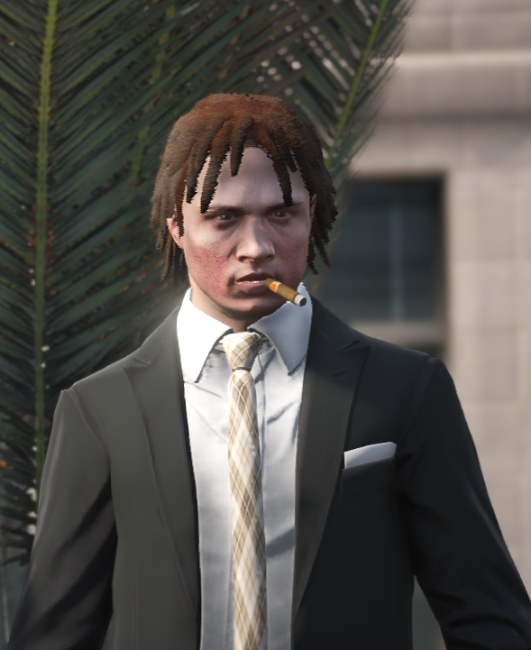

Johnny Pierogi – Founder & CEO
Johnny Pierogi is the brains, charm, and occasional chaos behind The Company with a PhD in Strategic Shenanigans & Applied Opportunism from the University of Los Santos. A former strategy consultant turned accidental entrepreneur, Johnny once trademarked the phrase "Let's circle back to that" and made a fortune in buzzword licensing. He's known for making big decisions based on vibes, lunch menus, and occasionally, data. When he's not guiding the ship, he's meditating on rooftops or rewriting the company handbook entirely in haiku.

Austin Jaboom – COO
Austin is responsible for The Company's operational 'vibes', ensuring each team meeting ends with applause—even if nothing gets done. A certified PivotMaster, Austin helped orchestrate 37 internal restructures in just one fiscal year. He holds a PhD in Corporate Flow from the ULSA and previously optimized performance at SnackSync, the leading AI-driven granola startup.

Tony Lamprano – CFO
Tony brings decades of financial illusion to The Company. A former crypto-casino accountant, Tony made headlines by monetizing unused buzzwords into tradable assets. He currently manages The Company’s funding matrix, which includes tokens, vibes, and vibes-backed tokens. He’s also the author of "Balance Sheets & Blockchain: A Fantasy".